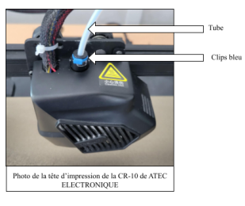
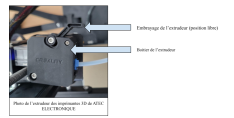

Lors de mon stage chez ATEC Électronique, j’ai participé au maintien en état de
fonctionnement d’une ferme d’imprimantes 3D utilisée pour produire des pièces
nécessaires aux projets internes de l’entreprise.
Contexte de la mission
ATEC Électronique dispose d’une ferme d’imprimantes 3D composée de plusieurs
machines utilisées pour fabriquer des pièces de prototypes, des éléments de machines
internes et des feeders destinés à une machine Pick and Place.
Durant mon stage, j’étais chargé de lancer des impressions, de surveiller leur bon
déroulement et d’intervenir lorsque certaines imprimantes présentaient des défauts
ou tombaient en panne.
Objectif :
remettre rapidement les imprimantes en état de marche afin de limiter les arrêts
et permettre la continuité de la production de pièces imprimées en 3D.
Document associé
La compétence est justifiée par mon rapport de stage, dans lequel une partie est
consacrée à la maintenance des imprimantes 3D et aux interventions réalisées.
Certaines impressions pouvaient échouer et provoquer une immobilisation de la machine.
Deux cas revenaient principalement pendant mon stage.
Blob autour de la buse : amas de plastique causé par un mauvais
démarrage d’impression ou un décollement de la première couche.
Buse bouchée : obstruction empêchant le filament de sortir
correctement pendant l’impression.
Risque pour la production
Une imprimante en panne entraîne une perte de temps : la pièce doit être relancée,
la machine reste indisponible et les projets qui dépendent des pièces imprimées
peuvent prendre du retard.
Point important :
la maintenance devait être réalisée avec méthode afin de réparer l’imprimante
sans abîmer la tête d’impression, la buse ou le système d’extrusion.
Démarche de maintenance
Pour intervenir correctement, j’ai suivi une méthode progressive permettant
d’identifier le problème, de démonter uniquement les éléments nécessaires et de
vérifier le bon fonctionnement après réparation.
Observer le défaut ou l’échec d’impression.
Identifier le type de panne rencontré.
Démonter les éléments nécessaires de la tête d’impression.
Chauffer la buse à la température adaptée au PLA.
Retirer le plastique bloqué ou accumulé.
Nettoyer la buse et vérifier le passage du filament.
Remonter les éléments puis relancer un essai.
Procédure appliquée
En cas de blob, je devais démonter le cache de la tête d’impression, chauffer la buse
puis retirer progressivement les morceaux de plastique. Une fois les plus gros morceaux
retirés, je nettoyais les résidus restants afin d’éviter une nouvelle obstruction.
En cas de buse bouchée, je retirais le tube de guidage du filament, vérifiais si le
filament était coincé dans l’extrudeur, puis chauffais la buse afin de déboucher le passage
du plastique.
Résultat obtenu
Cette démarche m’a permis de remettre plusieurs imprimantes en fonctionnement
et de maintenir la production de pièces imprimées en 3D. Elle m’a également permis
de mieux comprendre l’intérêt d’une procédure claire, répétable et adaptée au matériel.
Diagnostic de panneMaintenance correctiveImpression 3DRemise en serviceProcédure technique
Preuves et illustrations
Pour illustrer cette compétence, je peux m’appuyer sur les extraits du rapport de stage
décrivant les pannes rencontrées, ainsi que sur les photos de la tête d’impression et
de l’extrudeur présentes en annexe.

Tête d’impression : élément concerné par les opérations de maintenance,
notamment lors d’un blob ou d’une obstruction de la buse.

Extrudeur : partie à vérifier lorsque le filament est coincé ou ne sort
plus correctement pendant l’impression.
Exemple de procédure simplifiée
Cas d’une buse bouchée :
Arrêter l’impression et sécuriser la machine.
Démonter le tube de guidage du filament.
Chauffer la buse à la température adaptée au PLA.
Forcer légèrement le filament pour libérer le passage.
Retirer le filament abîmé puis couper son extrémité.
Réinsérer le filament proprement dans l’extrudeur.
Vérifier que le plastique sort correctement de la buse.
Remonter les éléments démontés et relancer un test.
Bilan personnel
Cette mission m’a permis de développer mes compétences en maintenance industrielle.
J’ai appris à identifier une panne, intervenir de manière méthodique et remettre un
système en état de fonctionnement.
Elle illustre directement la compétence Produire une procédure de maintenance,
car les interventions réalisées reposaient sur une suite d’étapes précises permettant
de traiter les problèmes les plus fréquents sur les imprimantes 3D.